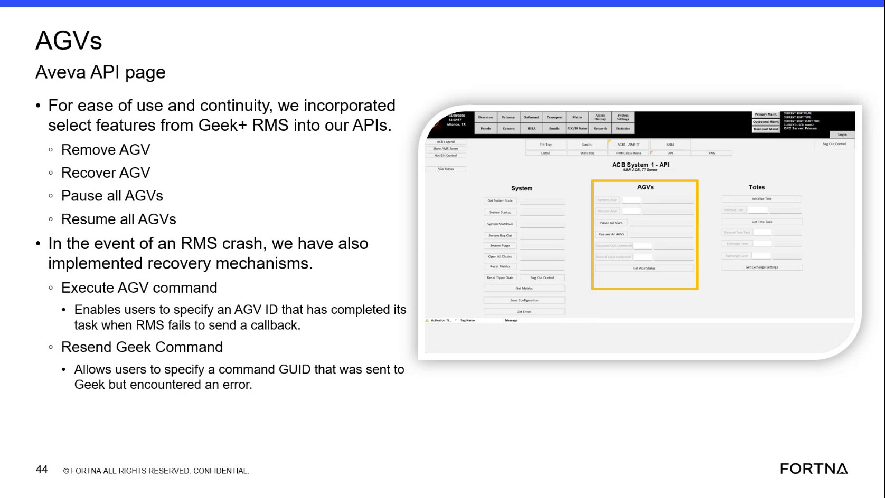

| Procedure ID | proc_resend_geek_command_using_a_command_guid_after_geek_communication_retry_stops_v1 |
|---|---|
| Title | Resend Geek Command Using A Command GUID After Geek+ Communication Retry Stops |
| Procedure Type | recovery |
| Primary Role | L2_support |
| Support Safe | Yes |
| Validation Status | needs_sme_review |
| Merge Status | source_finalized |
Use the Aveva-exposed Resend Geek Command function to resend a command to Geek Plus after retries have stopped or after a Geek Plus restart or error, by specifying the command GUID.
Use when a command previously sent to Geek Plus needs to be resent after retries have stopped, or after a Geek Plus server restart or error, and the command GUID is known.
Responsible role: L2_support
Instruction:
Open the Aveva interface or API area where AGV-related commands are available.
Expected result:
The AGV-related Aveva API page or equivalent command area is open.
Screens / Images:

Stop or Escalate If:
Responsible role: L2_support
Instruction:
Locate the recovery function named Resend Geek Command.
Expected result:
The Resend Geek Command function is identified and ready for input.
Screens / Images:
Stop or Escalate If:
Responsible role: L2_support
Instruction:
Identify the command GUID for the command that was previously sent to Geek Plus and needs to be resent.
Expected result:
A command GUID is available for entry into the resend function.
Stop or Escalate If:
Responsible role: L2_support
Instruction:
Enter or specify the command GUID in the Resend Geek Command input.
Expected result:
The command GUID is populated in the Resend Geek Command input.
Stop or Escalate If:
Responsible role: L2_support
Instruction:
Execute the resend action so the command is sent again to Geek Plus.
Expected result:
The specified command is resent to Geek Plus using the provided command GUID.
Stop or Escalate If: